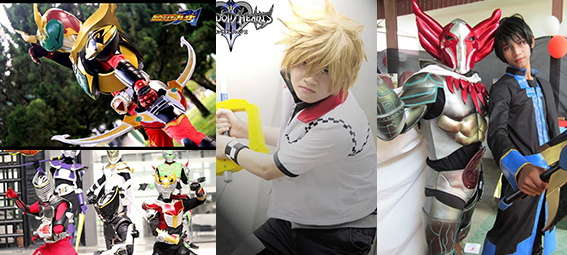
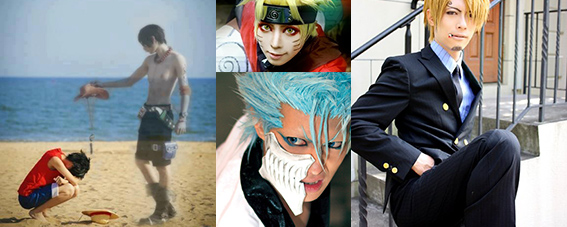
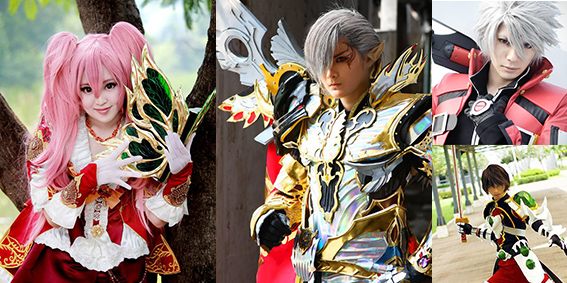
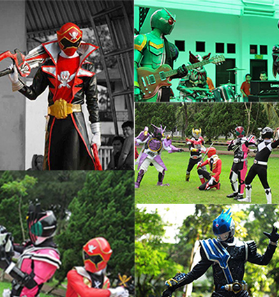
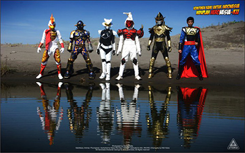
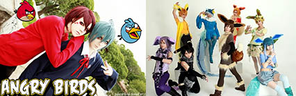

Pinsil Team

- M. Rizky Januari Hrp. (121111915)
- Suhendry (121111656)
- Fadhlan R. Nasution (121111613)
- Muhammad Rivaldi (121111851)
Cosplay?
- Cosplay (Costume Play) diambil dari kata Kosupure (Jepang)
- Mengenakan pakaian, aksesori & rias wajah seperti karakter anime, manga, dongeng atau game
- Pelakunya sendiri disebut Cosplayer
- Cosplayer dituntut untuk dapat berakting sesuai dengan karakter tokoh yang diperankan layaknya
- Diperlihatkan melalui foto dan video atau tampil di atas panggung pada suatu acara cosplay
- Dikalangan penggemar, cosplayer juga disingkat sebagai layer
Sejarah Cosplay
-
- Tahun 1960-an, penggemar cerita dan film fiksi ilmiah di AS sering mengadakan konvensi fiksi ilmiah
- Tradisi penyelenggaraan konvensi fiksi ilmiah sampai ke Jepang dekade 1970-an dalam bentuk acara peragaan kostum (costume show)
- Peragaan "cosplay" pertama kali dilangsungkan tahun 1978 di Ashinoko, Prefektur Kanagawa dalam bentuk pesta topeng konvensi fiksi ilmiah Nihon SF Taikai ke-17
- Kritikus fiksi ilmiah Mari Kotani menghadiri konvensi dengan mengenakan kostum seperti tokoh dalam gambar sampul cerita A Fighting Man of Mars karya Edgar Rice Burroughs
- Yasuhiro Takeda (Direktur perusahaan animasi Gainax) memakai kostum tokoh Star Wars
- Tahun 1985, Cosplay semakin meluas di Jepang karena menjadi sesuatu hal yang mudah dilakukan
Perkembangan Cosplay
-
- 1. Perkembangan Cosplay Di Dunia
- 2. Perkembangan Cosplay Di Indonesia
- 3. Perkembangan Cosplay Di Medan
1. Perkembangan Cosplay Di Dunia
-
- AFA (Anime Festifal Asia)
- WCS (World Cosplay Submit)
-
- Ikut sertanya brand-brand film atau game ternama dalam membuat event cosplay
2. Perkembangan Cosplay Di Indonesia
-
- Cosplayer Indonesia berhasil merebut juara di AFA dan WCS
- untuk event Internasional, Indonesia punya penyeleksian di setiap kotanya
-
- Indonesia juga di sponsori oleh event di luar negeri
3. Perkembangan Cosplay Di Medan
-
- Medan adalah kota yang perkembangannya paling pesat dibandingkan dengan kota lainnya di daerah Sumatera
- Event nasional membuat event regional untuk Medan
-

- Berkembangnya team-team Cosplay
- Munculnya cosplayer baru di setiap event
Pembagian Cosplay
- Secara umum cosplay dinilai sama. Tetapi tak langsung dalam beberapa event yang terjadi di Indonesia sering dilakukan pembagian kategori cosplay
Cosplay Anime/manga
- Diambil dari karakter animasi maupun manga atau komik ternama
-

Cosplay Game
- Diambil dari karakter Game
-

Cosplay Tokusatsu
- Diambil dari karakter superhero Jepang yang memiliki visual effect
-

Cosplay Original
- Diambil dari karakter yang di buat sendiri oleh pemerannya
Mereka memerankan sesuai gambar dan deskripsi
-

Cosplay Gijinka
- Diambil dari karakter yang tidak berwujud manusia tetapi di buat dalam versi manusia
Cosplay angry bird, doraemon dll
-

Efek Dari Cosplay
- 1. Menambah kreativitas
- 2. Membuat kita pandai dalam bidang-bidang tertentu
- 3. Mendapatkan teman-teman baru
- 4. Meningkatkan rasa percaya diri